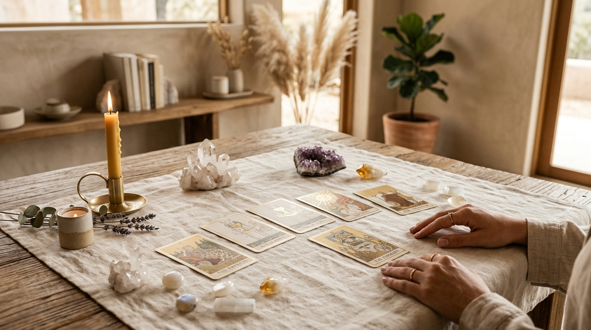
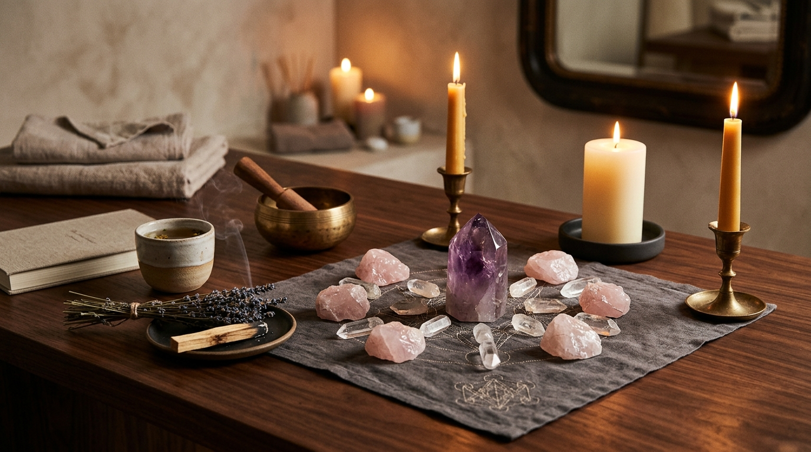

Begin Your Journey
Ready to Begin Your Session?
Private, personalised online wellness sessions by Aditi. Available across India and worldwide.
Guides on tarot guidance, rune readings, energy healing, lunar wellness practices, and how to make the most of your online wellness session.
Everything you need to know before your first session — how sessions are conducted, why chat and voice calls are preferred, what you will receive, and how to get the most from the experience.
Read the Guide"Your wellness journey begins with a single, intentional step."

Tarot GuidanceLearn what tarot is, how online sessions work step by step, what areas of life you can explore, and whether tarot is right for you as a first-time client.
Read More →Not sure which session to book? This guide compares tarot, rune guidance, energy wellness, and soul alignment sessions to help you choose with confidence.
Read More →A complete introduction to rune symbols, the Elder Futhark tradition, how rune guidance differs from tarot, and what to expect from an online rune session.
Read More →
Energy WellnessA clear, grounded guide to energy healing — what it is, what it is not, which crystals are used and why, and how online sessions work for first-time clients.
Read More →Why Amavasya and Purnima are considered auspicious, how New Moon and Full Moon sessions work, what Ekadashi sessions involve, and how to work with lunar cycles.
Read More →